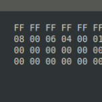

Sometimes when working with network packets inside the Linux kernel, it might be very useful to print packet contents to see what is actually going on.
Here I’m describing how to print packet from sk_buff structure and analyze this data with Wireshark.
In this short note, I will not describe capturing the packets inside the kernel but only show how to print the sk_buff.
Struct sk_buff is a famous Linux kernel structure that holds network packets (with all headers) during travel through the Linux network stack.
As you probably know, sk_buff contains a few pointers representing different regions in the one memory that contains all data of the packet.
Pointers ‘data‘ and ‘tail‘ may be changed on different layers of the network stack.

Let’s describe the reception of the packet. The initial state ‘data‘ points directly to the beginning of the packet on the Ethernet header.
It’s the L2 layer of the network stack. The L3 layer ‘data’ pointer is incremented by the Ethernet header’s size and points on the IP header. And so on.
But we still can access the Start of the packet and Ethernet header because data is still here.
Linux kernel provides a set of functions to access the different layers headers and sk_buff pointers manipulation. It’s highly recommended to use these functions instead of direct pointers access. Please refer include/linux/skbuff.h
If we want to print a full packet with a network header, we need to reach the mac header’s pointer.
Function skb_mac_header() can help us.
Let’s check how this function is implemented.
static inline unsigned char *skb_mac_header(const struct sk_buff *skb)
{
return skb->head + skb->mac_header;
}
As you can see, this function is straightforward. The result is offset from the sk_buff memory start (head) by some value from the mac_header variable. This variable initialized during packet reception in a driver (or in the stack during packet generation and transmission).
You can see function skb_reset_mac_header() which set mac_header to the position of the ‘data’ pointer. This might be useful during the initial construction of the packet inside sk_buff.
Also, you may know function eth_hdr()
This function is just a simple wrapper around skb_mac_header() with typecasting.
static inline struct ethhdr *eth_hdr(const struct sk_buff *skb)
{
return (struct ethhdr *)skb_mac_header(skb);
}
Now we can get a pointer to the whole packet, so it’s time to print some data.
We can print an Ethernet header with source/destination addresses and protocol numbers if it’s required.
struct ethhdr *ether = eth_hdr(skb);
printk("Source: %x:%x:%x:%x:%x:%x\n", ether->h_source[0], ether->h_source[1], ether->h_source[2], ether->h_source[3], ether->h_source[4], ether->h_source[5]);
printk("Destination: %x:%x:%x:%x:%x:%x\n", ether->h_dest[0], ether->h_dest[1], ether->h_dest[2], ether->h_dest[3], ether->h_dest[4], ether->h_dest[5]);
printk("Protocol: %d\n", ether->h_proto);
Please note that the protocol number is in network byte order.
Typically network packets are printed as hex string by 16 bytes in one line and with line numbering.
Something like this:
000000 FF FF FF FF FF FF 20 CF 30 38 56 A1 08 06 00 01 000010 08 00 06 04 00 01 20 CF 30 38 56 A1 C0 A8 01 02 000020 00 00 00 00 00 00 C0 A8 01 05 00 00 00 00 00 00 000030 00 00 00 00 00 00 00 00 00 00 00 00
To get such output, we can write a simple function.
void pkt_hex_dump(struct sk_buff *skb)
{
size_t len;
int rowsize = 16;
int i, l, linelen, remaining;
int li = 0;
uint8_t *data, ch;
printk("Packet hex dump:\n");
data = (uint8_t *) skb_mac_header(skb);
if (skb_is_nonlinear(skb)) {
len = skb->data_len;
} else {
len = skb->len;
}
remaining = len;
for (i = 0; i < len; i += rowsize) {
printk("%06d\t", li);
linelen = min(remaining, rowsize);
remaining -= rowsize;
for (l = 0; l < linelen; l++) {
ch = data[l];
printk(KERN_CONT "%02X ", (uint32_t) ch);
}
data += linelen;
li += 10;
printk(KERN_CONT "\n");
}
}
KERN_CONT in printk allows us to add data to the message buffer without flushing and without printing module name (and other information) at the beginning of every string. Except for time 🙂
After executing this function, you can find in dmesg something like this:
[ 1869.042384] 000000 FF FF FF FF FF FF 20 CF 30 38 56 A1 08 06 00 01 [ 1869.042424] 000010 08 00 06 04 00 01 20 CF 30 38 56 A1 C0 A8 01 02 [ 1869.042463] 000020 00 00 00 00 00 00 C0 A8 01 05 00 00 00 00 00 00 [ 1869.042502] 000030 00 00 00 00 00 00 00 00 00 00 00 00
To analyze this data with Wireshark (which is very handy), we need to copy this text in some text files (for example, packet_dump.txt), remove timestamps, and convert this text into binary pcap format.
We need text2pcap utility, which can be found in most Linux distros.
Run the following command:
cat packet_dump.txt | awk '{$1=""; print $0}' | text2pcap - hex_dump.pcap
Now open the resulting hex_dump.pcap with Wireshark.
{kind=link}
I can recommend using this method to print and analyze only small and medium-size packets. Large packets may hang or slow down your system during printing.
Thanks for reading!
This was very helpful, thanks 😀
Very very useful page. Thank you for writing this.
Might I humbly suggest the following which is somewhat simpler and has much the same effect:
void dump_skb(struct sk_buff *skb) {size_t len;
printk("Packet hex dump:\n");
uint8_t *data = (uint8_t *) skb_mac_header(skb);
if (skb_is_nonlinear(skb)) {
len = skb->data_len;
} else {
len = skb->len;
}
for (size_t ii = 0; ii < len; ++ii) {
printk("%06x\t%02x ", ii, data[ii++]);
for (; ii < len && (ii % 16 != 0); ++ii) {
printk(KERN_CONT "%02x ", (uint32_t)(data[ii]));
}
printk(KERN_CONT "\n");
}
}
In particular, using
%06das a format specifier and then adding 10 tolievery time you print a row of 16 bytes is pretty horrible…Though of course
printk("%06x\t%02x ", ii, data[ii++])is undefined – you need to move the increment to a separate statement.Is it possible to print unfragmented ping message , ” ping -l 8972 -f 192.168.0.108 –t” , sent from another computer ?
Thanks.
why the len is not the “len = skb->tail – skb->mac_header;”?